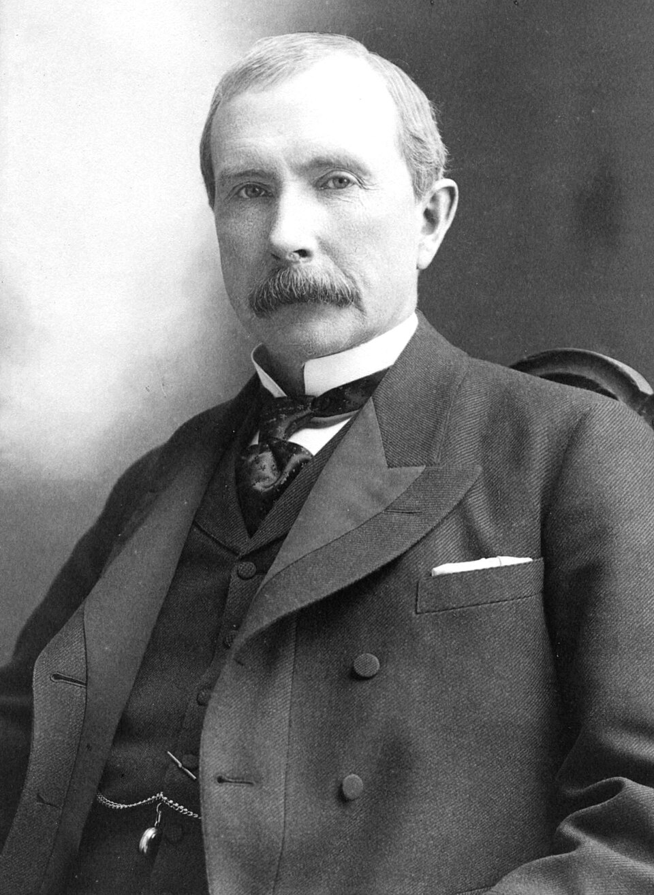

John Davison Rockefeller Nacio el 8 de julio de 1839 y murió el 23 de mayo de 1937; fue un magnate empresarial estadounidense. Formó parte del grupo de empresarios conocido como «barones ladrones» de la Edad Dorada de la industria en los Estados Unidos, cuyo éxito le llevó a ser el hombre más rico de su época. Fue el fundador y presidente de la Standard Oil, una gigantesca compañía que llegó a controlar la extracción, refinado, transporte y distribución de más del 90% del petróleo de Estados Unidos y sostuvo monopolios enteros (en forma de inversiones) en múltiples países extranjeros.Durante un período de más de cuarenta años, consolidó a la Standard Oil como la compañía petrolera más grande del mundo, revolucionando la industria en todos sus niveles y demostrando una extraordinaria e implacable capacidad competitiva. Por otro lado, dedicó gran parte de su fortuna y recursos a numerosas donaciones, fundaciones y programas, siendo el fundador de la Universidad de Chicago, una de las universidades más prestigiosas del mundo, cuna de 87 Premios Nobel, así como también de la Universidad Rockefeller en Nueva York, además de impulsar numerosas áreas de la educación, la ciencia y la medicina. Sus logros empresariales son tan destacables como controvertidos, pues mediante astucia, ingenio y mucha dedicación, ascendió en el mundo empresarial, levantó un extenso imperio que se extendió hasta un punto que ninguna otra empresa en la historia ha logrado alcanzar hasta hoy en día. Señalado por sus prácticas monopolistas, fue denunciado por periodistas e investigadores, y a la larga el gobierno de los Estados Unidos tuvo que enfrentarse a él, logrando llevarlo ante los tribunales y consiguiendo tras años enteros de litigios que se dictara la separación de su gigantesca compañía petrolífera, separación que tardó mucho tiempo en materializarse después de dictada. Rockefeller hasta ahora es el único caso de un empresario que llegó a construir un monopolio puro (en cuya disolución finalmente tuvo que intervenir el propio gobierno de los Estados Unidos) y que de hecho marcó en profundidad el desarrollo de la industria petrolera a nivel mundial. Es considerado como el hombre más acaudalado de la historia mundial y es el fundador de la mítica familia de millonarios que aún persiste hoy en día, con su mismo apellido y poder económico. Sus negocios no solo abarcaron los Estados Unidos, sino que se extendieron a otros lugares, como Europa y Latinoamérica. De hecho, su familia continuó controlando la industria petrolífera en esta última región durante más de seis décadas tras su fallecimiento.
John D. Rockefeller nació en 1839 en Richford, Nueva York, en una familia de clase media de origen alemán y escocés. Su madre, Eliza, era organizada, trabajadora y muy religiosa, mientras que su padre, William Rockefeller, era un vendedor ambulante poco presente y de dudosa reputación. Más adelante, John descubrió que su padre engañaba a la gente vendiendo productos supuestamente milagrosos. De su madre heredó la disciplina, el orden y la estricta moral calvinista. Cuando la familia se mudó a Cleveland, Ohio, Rockefeller estudió en escuelas públicas y desde niño mostró gran interés por los negocios. Vendía piedras pintadas a sus compañeros y guardaba sus ganancias en un frasco que llamaba su primera “caja fuerte”. Con el tiempo logró ahorrar 50 dólares, una suma importante para la época. Una experiencia clave ocurrió cuando prestó dinero a un amigo de su padre con un interés del 7 % y recibió más dinero al devolverle el préstamo. Esto le enseñó el valor de las inversiones y los intereses. Desde entonces comenzó a registrar cuidadosamente sus ganancias en una libreta llamada “Registro A”, desarrollando la mentalidad financiera que más tarde lo convertiría en un gran empresario.
El interés de John D. Rockefeller por los negocios creció durante sus estudios en la escuela comercial de Cleveland. A los dieciséis años consiguió su primer trabajo en una empresa de comercio de granos, donde destacó por su dedicación y habilidad con las finanzas. Incluso fuera del trabajo analizaba mentalmente las operaciones del día para encontrar formas de obtener mayores ganancias. Con el tiempo se convirtió en contador y trabajó para varias empresas en Cleveland, llegando a ganar 600 dólares anuales en 1857, un salario muy alto para la época. Sin embargo, al negarle un aumento de sueldo, decidió independizarse. Con 800 dólares ahorrados y un préstamo de 1000 dólares de su padre, fundó junto a M. B. Clark la empresa Clark & Rockefeller. El negocio tuvo un gran éxito: ganó 4000 dólares el primer año y cuadruplicó esa cifra el segundo. A pesar de ello, Rockefeller no estaba satisfecho y aspiraba a alcanzar metas mucho mayores.
Después de la Guerra de Secesión, Cleveland se convirtió en uno de los principales centros de refinación de petróleo de Estados Unidos. En ese contexto, John D. Rockefeller aprovechó la sobreproducción de queroseno y negoció en secreto tarifas preferenciales con las compañías ferroviarias, lo que le permitió fundar en 1870 la empresa Standard Oil con un capital de un millón de dólares. Gracias a acuerdos especiales con los ferrocarriles, Standard Oil obtenía grandes descuentos en el transporte del petróleo, algo que perjudicaba a sus competidores. Esto provocó protestas y conflictos con otros empresarios petroleros, y finalmente el acuerdo fue cancelado. Sin embargo, Rockefeller logró vender queroseno más barato, haciendo que este producto fuera accesible para las clases medias y trabajadoras. Rockefeller expandió rápidamente su empresa, controlando no solo las refinerías, sino también la extracción y el transporte del petróleo mediante oleoductos. Para 1872, Standard Oil refinaba una gran parte del petróleo del país y fue eliminando progresivamente a la competencia hasta dominar cerca del 95 % de la industria petrolera estadounidense. Con un equipo de administradores y financieros muy capaces, Rockefeller convirtió a Standard Oil en un enorme monopolio y pasó a ser considerado prácticamente el dueño de la industria petrolera de Estados Unidos.
La creación de la Standard Oil Trust fue la estrategia con la que John D. Rockefeller consolidó el control casi total de la industria petrolera. Para evitar acusaciones de monopolio, creó en 1882 un “trust”, es decir, una agrupación de empresas bajo una misma dirección central. Así podía controlar muchas compañías sin comprarlas directamente y esquivar las restricciones del gobierno sobre la competencia. La Standard Oil se convirtió en el primer gran monopolio mundial, dominando cerca del 90% del petróleo de Estados Unidos. Controlaba todas las etapas del negocio: extracción, refinación, transporte, distribución y venta. Su enorme infraestructura incluía miles de pozos, kilómetros de oleoductos, vagones cisterna y más de 100.000 empleados. Durante la década de 1880 alcanzó su máximo poder, aunque luego su dominio comenzó a disminuir por la aparición de nuevos competidores y descubrimientos de petróleo en países como Rusia, Birmania y Java. Además, la invención de la bombilla eléctrica redujo la demanda de queroseno. Rockefeller también innovó en el mercado petrolero: la empresa manipulaba los costos de almacenamiento para influir indirectamente en los precios y creó certificados sobre petróleo almacenado, dando origen al primer mercado de futuros del petróleo en Nueva York. Con el tiempo, la empresa se adaptó expandiéndose al gas natural y posteriormente a la producción de gasolina para automóviles. Todo esto convirtió a Rockefeller en el hombre más rico de Estados Unidos y posiblemente del mundo en esa época.